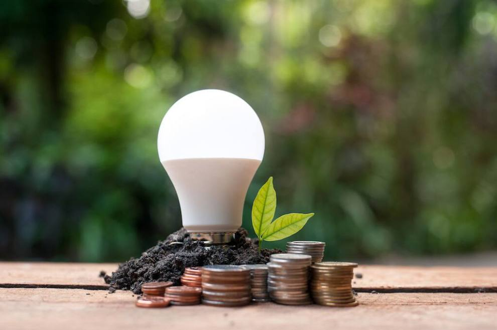
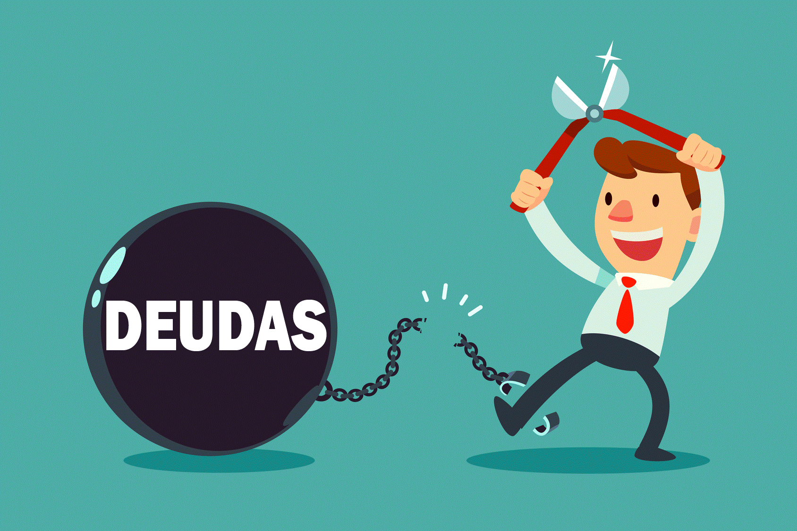
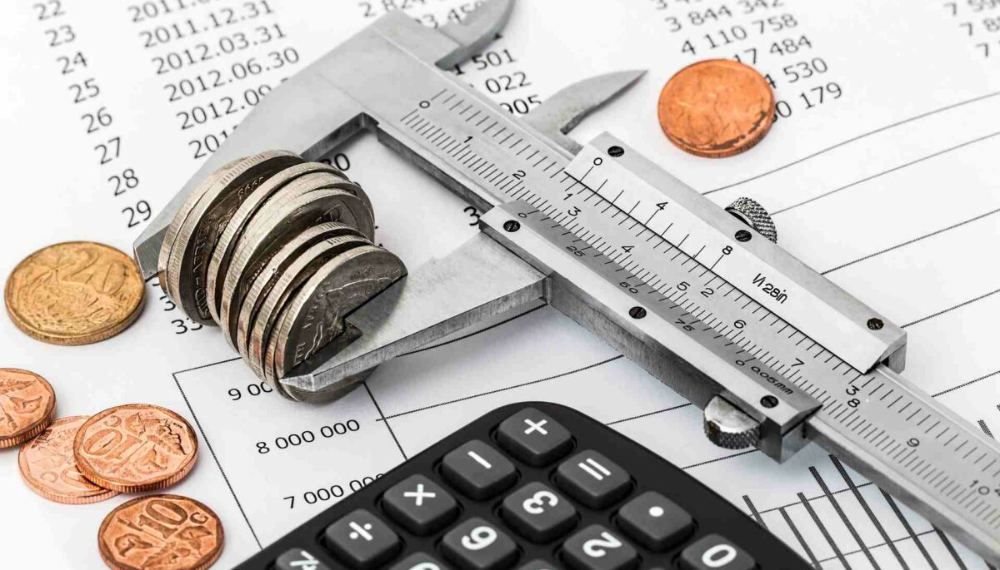

¿Cómo ahorrar energía eléctrica? |
¿Cómo salir de deudas? |
¿Cómo crear un presupuesto? |
|||||
|  |
1. Utilice la energía eléctrica únicamente cuando sea necesario. |
 |
1. Tenga en cuenta el total de lo que debe y registre cada una de sus deudas. |
1. Calcule su ingreso neto. |
|||
¿Cómo priorizar objetivos? |
¿Cómo ahorrar agua potable? |
¿Cómo invertir? |
|||||
Para establecer objetivos claros, necesita poder asignar una descripción precisa a cada tarea, asignándole a cada una un grado de complejidad y una lista de requisitos previos y dependencias. Cada tarea debe ser clara para saber en qué consiste exactamente y qué aportará a la meta mayor. Es importante tener un objetivo general y poder definir claramente el objetivo de cada una de las tareas mencionadas. |
1. Reutilice el agua, contar con una cubeta en su regadera mientras se ducha le llevará a recolectar
aguas residuales, que puede utilizar para regar plantas o para descargar el inodoro. |
1. Haga un plan y fije sus metas de rentabilidad. |
|||||
¿Cómo establecer metas? |
¿Cómo evitar compras compulsivas? |
¿Cómo detectar necesidades? |
|||||
• Defina un resultado específico a lograr (pensando en el beneficio). |
1. Marque un límite de gasto mensual para caprichos. |
Para identificar un gasto necesario debemos separar las necesidades de los deseos. Para ello, basta preguntarse cada vez que vaya a hacer una compra o reciba una oferta irresistible: “¿realmente necesito esto?” Es la pregunta más sabia que uno puede hacerse, y si la respuesta es “no”, mejor deje a un lado la oferta sin hacer más preguntas al vendedor. En el grupo de necesidades humanas básicas tenemos: alimentación, vestimenta, vivienda, salud, educación, comunicación y entretenimiento. |
|||||
¿Cómo organizar las finanzas? |
¿Cómo crear un fondo de emergencias? |
¿Cómo determinar la situación financiera actual? |
|||||
|  |
1. Defina objetivos financieros y elabore un presupuesto. |
1. Elija la cantidad que desea pre ahorrar todos los meses a principio de mes para su fondo de emergencia. |
Lo primero que debe saber es dónde está situado económicamente, es decir, cuál es su foto financiera actual.
Para ello, vamos a recurrir a tres preguntas básicas: |
||||